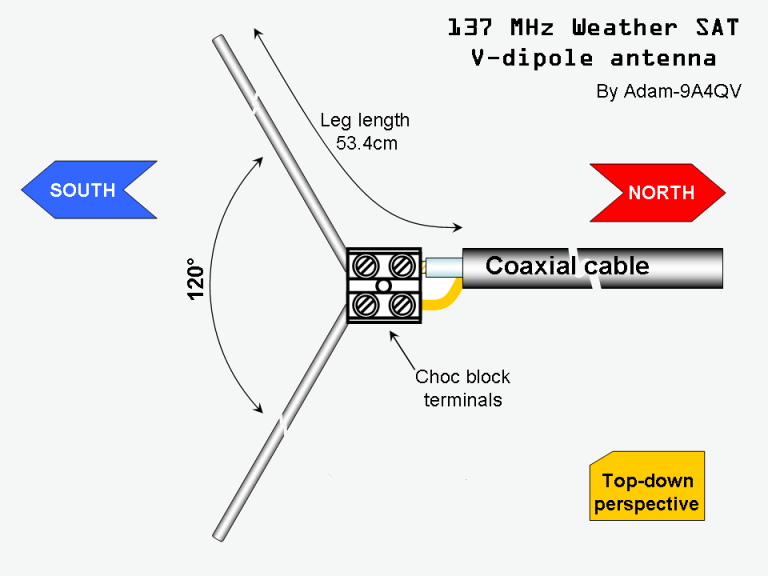
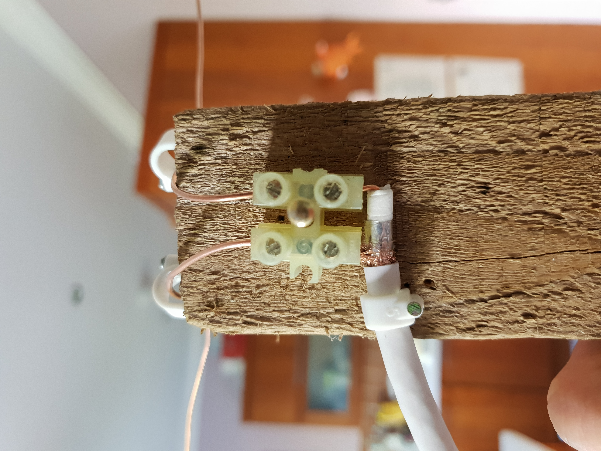
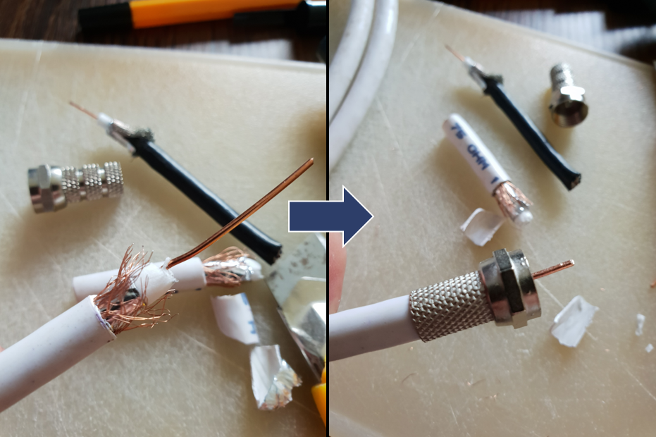
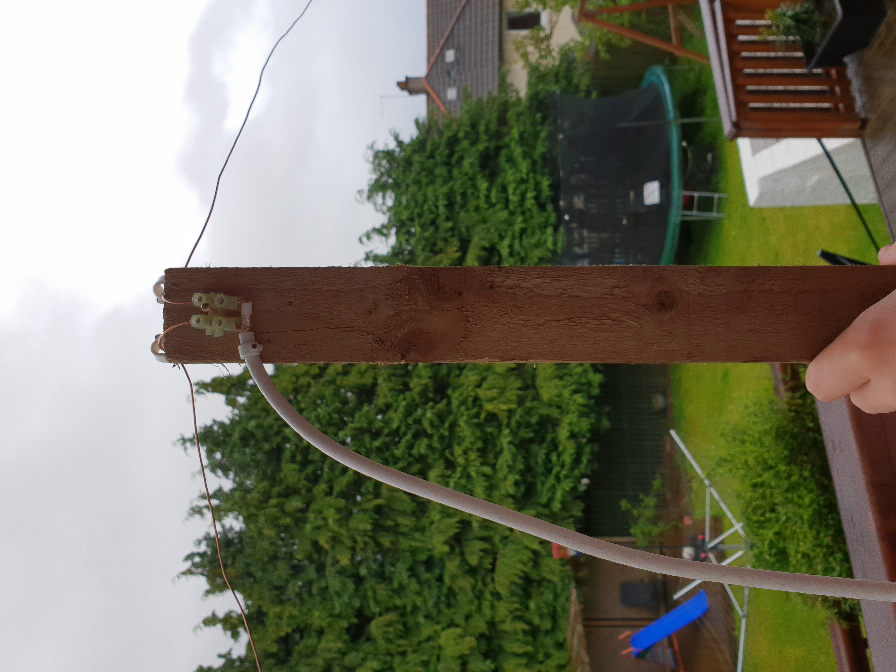
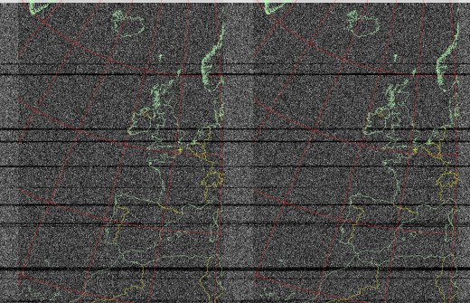
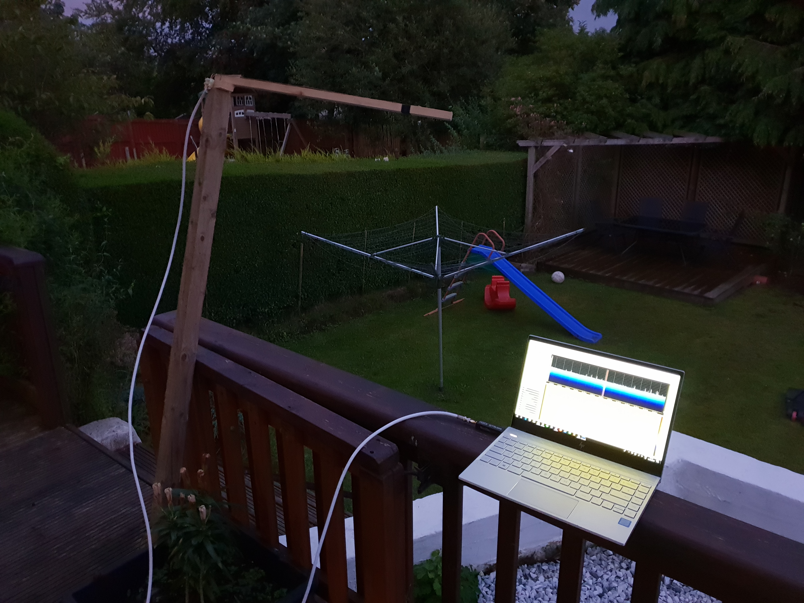
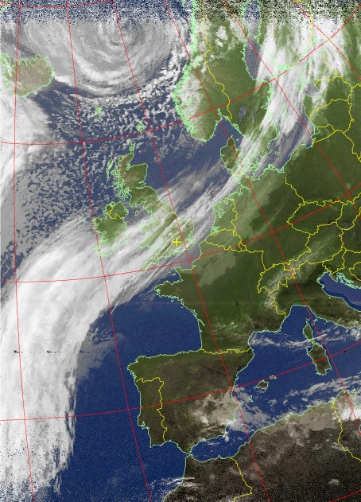

Loading...
I was first made aware that anyone with the right kit and a bit of know-how can pull images from satellites through this video. I was stunned by the quality of images that can be obtained with a rudimentary antenna and a cheap software-defined radio (SDR), so simply had to try it myself! Below is a brief overview of the progression and outcome of this project.
The steps required to complete this project are surprisingly straightforward. They can be summarised in a high-level form as follows:
The setup required to fulfil these steps is shown in the schematic below. Note that it is the NOAA-18 and NOAA-19 satellites that are being targeted. The more modern GOES satellites provide higher resolution imagery, but also require more bandwidth and thus a more sophisticated antenna design to take advantage of this.
.png)
The V-Dipole is one of the simplest types of antenna, yet it is capable of providing good performance if constructed and set up correctly. It consists of two horizontally mounted metallic rods/wires arranged in a 120° "vee" shape. For this project, copper wire was used as it was readily available via stripping spare cables. Copper is also an excellent conductor, meaning that little RF energy (and thus data) will be lost between the receiver and the decoder. The image below shows the design upon which the antenna is based. The 53.4 cm leg length corresponds to the quarter wavelength of the NOAA weather satellites, which trasmit at 137 Hz.

Since the satellites broadcast in circular polarisation, there will be a loss of approximately 3 dB in this design as it utilises linear polarisation; however, this should not be too detrimental to the overall results. Below is an image showing how the copper wires were connected to the 75 Ohm coax cable using a choc block connector.

The SDR used for this project was the NESDR SMArTee v2, pictured below.
In order to connect the coax cable to the SDR, an F-connector female to SMA male adaptor had to be fitted. This first required the coax cable to be trimmed and tidied.
The final step in the assembly process is to connect the coax cable to the SDR. Using the SDRSharp software, terrestrial radio signals were immediately picked up from Clyde 1!

I checked the n2yo.com website for the next NOAA pass, prepared the antenna, and patiently waited...

As the NOAA-18 satellite passed overhead, signals were being picked up in the SDRSharp software, which was a promising sign. As the satellite travelled further away, the signal weakened and eventually fizzled out, meaning it was now time to decode. WXtoImg was used to decode the data, and an image began slowly materialising, layer by layer.

This first image is very noisy. The outlines that can be seen are simply superimposed in the post-processing of the data, and so no actual information is conveyed by this image. This was a little disappointing, but it was still thrilling to see the satellite signal being received in real time!. Some adjustments were made in an attempt to generate better images. Firstly, the antenna was modified to have two horizontal pieces of wood to which the copper wires could attach to keep them fixed. Secondly, the antenna was held at a higher elevation so that there would be fewer obstructions that could interfere with the signal.

Again, I waited for the satellite to pass and watched as data was downlinked through my makeshift antenna. The following image was staggering...

Clouds and land features are clearly visible
One great thing about this project is that there's lots of room for improvment and further refinement. Perhaps most notably, different antenna variants such as helical and discone can be tested. The antenna was undoubtedly what limited my attempt at this project the most, but I was still able to show the surprising power of the humble V-dipole. Another limitation I faced was the altitude at which the antenna was placed. Performing the downlink in a higher, more remote location would have provided better results. Finally, once the NOAA satellites have been exhausted, the project could be adapted to cater to higher resolution satellites, such as GOES. Overall, this project was remarkably successful and I learned a lot about communications, especially regarding satellites.